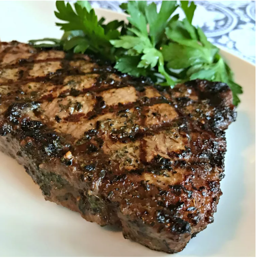

Steak Marinade

Description
Marinating a steak before cooking serves two purposes: It helps tenderize
the meat and adds just the right amount of flavor. Some top-quality steaks
can go without a marinade, since they're already full of meaty flavor and,
with the right prep, end up juicy and tender without any help from a marinade.
Budget-friendly steaks, however, benefit tremendously from marination.
You'll be shocked at the difference a good marinade makes!
Ingredients
- ½ cup olive oil
- ⅓ cup soy sauce
- ⅓ cup fresh lemon juice
- ¼ cup Worcestershire sauce
- 3 tablespoons dried basil
- 1 ½ tablespoons garlic powder
- 1 ½ tablespoons dried parsley flakes
- 1 teaspoon ground white pepper
- 1 teaspoon dried minced garlic (Optional)
- ¼ teaspoon hot pepper sauce (Optional)
Steps
- Place olive oil, soy sauce, lemon juice, Worcestershire sauce, basil,
garlic powder, parsley, white pepper, minced garlic, and hot pepper sauce in a blender;
blend on high speed until thoroughly combined, about 30 seconds.